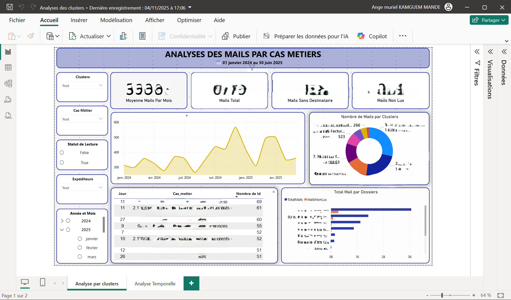
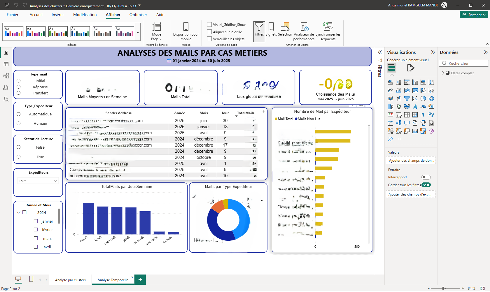

Analyse des Mails – Cas Métiers

🎯 Objectif :
Analyser les e-mails reçus entre janvier 2024 et juin 2025 en les regroupant
par cas métier (clusters), statut de lecture, et type de dossier.
L’objectif : identifier les cas les plus sollicités, comprendre les volumes,
repérer les mails non lus, et anticiper les zones de surcharge.
🚀 Particularité :
Dashboard construit à partir d’exports Outlook bruts, avec :
✔ gestion des catégories multi-valeurs
✔ regroupement automatique des expéditeurs
✔ segmentation par mois / jours / heures
✔ filtres intelligents (statut, cas métier, période, expéditeur)
✔ vue métier claire & adaptée à la volumétrie réelle
📊 Indicateurs clés :
- Moyenne mensuelle des mails
- Volume total & volume non lu
- Top dossiers par volume
- Analyse par cluster métier (facturation, paiements, ICP, banque, fournisseurs…)
- Heatmap d’activité temporelle (jours/heures)
- Courbes d’évolution mensuelle des échanges
🛠️ Outils & Méthodes :
Power BI (DAX & Power Query), nettoyage avancé Outlook, segmentation des catégories,
storytelling visuel, design applicatif (panneaux latéraux, filtres radio).
🔒 IMPORTANT :
Pour des raisons de confidentialité, le dashboard complet et les données brutes
ne peuvent pas être publiés car ils contiennent des informations internes sensibles.
📸 Aperçu du Dashboard
